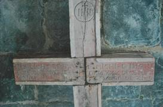

V.l.n.r.:
minister-president Geert Bourgeois, de gelauwerde Cyriel
Moeyaert en de initiatiefnemer Wido Bourel
V.l.n.r.:
minister-president Geert Bourgeois, de gelauwerde Cyriel
Moeyaert en de initiatiefnemer Wido Bourel
> nieuwsbrief
> 34e jg. - 1e trimester 2016
| Bijdragen over: |
Hoewel we,
zoals elk jaar overigens, straks weer geconfronteerd zullen
worden met de – uiteraard weer eens naar boven – aangepaste
posttarieven, blijft uw ledenbijdrage voor 2016 ongewijzigd. Ze
beloopt voor het in mei te verschijnen nieuwe Jaarboek De Nederlanden
‘extra muros’ en voor de driemaandelijkse Nieuwsbrief Zannekin 29 €.
Vanaf 35 € wordt u met dank als steunend lid geboekt.
Maakt u bij
voorkeur gebruik van ons ‘Belgische’ zogenaamd ‘Europees’
rekeningnummer iban
BE13 4648 2202 5139 – bic: KREDBEBB BE, waarvan de
rekeningoverzichten ons dagelijks meegedeeld worden. Leden genieten bovendien ook
een tastbare vermindering op de deelnamekosten van de Zannekin-activiteiten.
Het jongste nummer van het Bulletin
des Amis de Jean Mabire is quasi volledig
gewijd aan diens contacten met de zuidelijke Nederlanden. alvast
de contactgegevens van de Association des Amis de Jean Mabire: www.jean-mabire.com
Adres: 15, route de Breilles, F. 1730 Nernay Saint Martin.
We komen hierop meer uitgebreid terug in
een volgende Nieuwsbrief.
Ondertussen kunnen we wel al meegeven dat we aan de
persoonlijkheid van Jean Marie Gantois uitgebreid aandacht
zullen besteden in ons Jaarboek De Nederlanden ‘extra
muros’ dat in mei zal verschijnen.
Jaarboek De Nederlanden ‘extra muros’ 2016
Naast het uitgebreide levensbeeld van Jean
Marie Gantois komen er in het nieuwe jaarboek ook bijdragen over
het Barrièretraktaat (van Klaas van Gelder en Jan Debets), over
Cyriel Rousseu, de gebroeders Vandevelde en de taalactie aan de
Schreve (van Kristof Papin), over het pamflet ‘Wens aan het
Belgische volk’ door J.L. Serlipppens in 1815 (van Frank Judo),
over de Gelderse Achterhoek en het Westmunsterland tijdens de
Eerste Wereldoorlog (van Marten Heida), over Gebouwen en
beeldhouwwerken, die in onze gebieden door oorlogs- en ander
geweld definitief ten onder zijn gegaan (van Zeno Kolks) en
andere meer. Kortom: het wordt weer een kleurrijk en afwisselt
palet van bijdragen over tal van aspecten uit de zo verscheiden
geschiedenis van onze Nederlanden ‘extra muros’
Alvast
te noteren: Studie-uitstap
op zaterdag 4 juni richting Valencijn; indien
voldoende belangstelling wordt dit een tweedaagde (4 en 5
juni) naar Amiens. Op zaterdag 6 augustus bezoeken
we een dagje Den Haag en op
zaterdag 24 september
houden we onze Ontmoetingsdag
in het teken van de Geuzenopstand
(1566-2016) in Belle/Bailleul.
Méér info hieromtrent in onze volgende Nieuwsbrief.
De uitgave en verspreiding van de
kalender maakt deel uit van de werking van het
Davidsfonds-Frans-Vlaanderen, dat onder meer ook culturele
uitstappen organiseert en een nieuwsbrief uitgeeft. De promotie
van het Vlaamse erfdeel staat hierbij centraal.
In de kalender 2016 komen de volgende
thema’s aan bod:
Vlaams Artesië, het hele baljuwschap van
Sint-Omaars, is een lieflijke streek en bezit ook kleine,
boeiende steden zoals Doornem (Tournehem). De kerk die u op de
voorpagina ziet met haar portaal uit de XVe eeuw is een schrijn
van barokke kunst en Vlaamse primitieve panelen.
Het gotische kasteel “Zuthove” uit 1472
rijst op in Ruisscheure aan de rand van de Westhoek. Met z’n
hoektorens en z’n trapgevels is het weerspiegeld een heldere
wal.
In het hart van de Westhoek moet je het
typisch Vlaamse dorp Rubroek bezoeken, waar de monnik Willem
vandaan kwam die al missionaris naar Mongolië trok en z’n
reisverhaal neerschreef. Vlak bij de burcht waar hij
waarschijnlijk geboren is, staat D’Oude Hofstede, waarvan u hier
het woonhuis ziet, de woning van iemand uit de boerenadel.
Tot in de XVe eeuw was de stad Kales
Nederlandssprekend. Als Vlaamse stad heeft Kales z’n eigen
belfort, ook erkend als werelderfgoed. Opmerkelijk is de
beeldengroep “De Burgers van Kales” van Rodin, vlak ernaast. Die
Vlaamse burgers die in 1347 de bedreigde stad gered hebben door
hun leven ervoor te willen geven. De Engelse koning Edward III
liet ze in leven op voorspraak van koningin Filippina.
Niet ver uit de buurt van Bonen in het
lieflijke heuvelland ligt een parel van een dorp, Bazingem, 76 m
hoog, met een oude grotendeels Romaanse kerk. Het omringende dal
is schilderachtig mooi.
We keren terug naar het hart van de
Westhoek: de oude stad Kassel, oude Romeinse vesting met
middeleeuwse muren en poorten. De top van de berg (176 m) was
omringd met een muur en heet nog altijd ‘Kasteel’. Daar in de
stiftkerk lagen Robrecht de Fries en Andries Steven begraven.
Alleen de poort van de vesting (van 1621) is overgebleven,
tussen twee ronde bolwerken.
We sluiten in schoonheid af in het nog zo
Vlaamse Sint-Omaars, bij het bisschoppelijke Grootseminarie met
z’n Vlaamse gevel, Brugse stijl uit 1605. Het was eerst bestemd
voor het Sint-Omaarscollege (1604),
tegenhanger van het Vlaamse Sint-Bertijnscollege (1561)
waarvan de voertaal Nederlands was.
________________
De kalender kost 7
euro (9 euro met verzending). Voor verzending gelieve het
juiste bedrag te storten op de nieuwe girorekening
van het Davidsfonds-Frans-Vlaanderen (IBAN: BE14 7380 3921 3583
– BIC: KREDBEBB – adres: Toekomst-straat 72 8790 Waregem).
Meer informatie bij Jan Van Ormelingen, 016/72 01 87
Ons secretariaat helpt u graag!
U bezorgt ons naam en adres van een
vriend of kennis en
wij sturen met uw groeten:
·
Onze kennismakingsfolder
·
Een exemplaar van onze jongste Nieuwsbrief
Zannekin
·
Een begeleidende brief.
Doen! Met onze hartelijke dank voor uw
gewaardeerde medewerking
Indien de bestemmeling effectief tot
lidmaatschap besluit, dan ontvangen zowel u als hij/zij,
respectievelijk bij wijze van dank en welkom, een exemplaar
van onze uitgave
· Laus Flandriae van de hand van Jean-Marie Gantois
Laudatio uitgesproken door Wido
Bourel naar aanleiding van de uitreiking van de
Marnixring erepenning aan Cyriel Moeyaert, in Mechelen
op 18 oktober 2015
V.l.n.r.:
minister-president Geert Bourgeois, de gelauwerde Cyriel
Moeyaert en de initiatiefnemer Wido BourelGeachte minister-president, geachte
voorzitter, beste Marnix-vrienden, dames en heren en vooral
beste Cyriel,
De Tsjechische historicus en dissident
Milan Hübl, gestorven in 1989, schrijft in een van zijn
nagelaten teksten, en ik citeer: “Om
een volk te doen verdwijnen, begint men met zijn geheugen af
te nemen. Men vernietigt zijn boeken, zijn cultuur en zijn
geschiedenis. Vervolgens schrijft iemand anders andere
boeken, vanuit een andere cultuur en verzint een andere
geschiedenis. Het volk vergeet dan langzaam wie het is en
wie het was. En de wereld rondom hem vergeet nog sneller.”
Treffend hoe dit citaat van toepassing is
op de situatie in Zuid-Vlaanderen en de Zuidelijke Nederlanden
sinds hun annexatie bij Frankrijk. Treffend ook dat er toch
intellectuelen opstaan die zich levenslang verzetten om een volk
en zijn taal te behoeden van de dreigende verdwijning. Onze
laureaat van vandaag, Cyriel Moeyaert, is er één van.
Het moet gezegd dat de Marnixring dit jaar
voor de uitreiking van zijn erepenning bijzonder geïnspireerd is
geweest. Het bekroont de inzet en het levenswerk van een heel
bijzondere man die, sinds bijna een eeuw, de doestellingen die
aan de basis van deze onderscheiding liggen als geen ander
belichaamt: onze Nederlandse taal en het volk der Nederlanden
dienen.
Cyriel Moeyaert vierde dit jaar zijn 95e
verjaardag. Hij is in 1920 in Sint-Andries bij Brugge geboren en
groeide op in Langemark, in een kinderrijke boerenfamilie. Niet
alleen een lang leven is de Moeyaerts in de genen geschreven -
want zijn broers en zuster werden allemaal ouder dan 90 jaar –
ook de taal en het geschreven woord zijn bepalend: Bart
Moeyaert, de talentvolle jeugdschrijver, is een achterneef van
Cyriel.
Wie zoals Cyriel Moeyaert 95 jaar lang
deze wereld heeft kunnen aanschouwen vergaart een berg aan
unieke herinneringen. De jeugdherinneringen van Cyriel Moeyaert
gaan terug tot de heropbouw van de Westhoek na de totale
verwoestingen van de Eerste Wereldoorlog. Naar zo iemand is met
gretigheid te luisteren. Zeker als het gaat om een zo
sprankelende geest en een uitzonderlijk geheugen die over Frans-
Vlaanderen alles weet, alles gelezen en gezien heeft.
Dit schreef de Duinkerkse dichter Michiel
de Swaen, meer dan 300 jaar geleden in zijn gedicht Ghedachten
op de snelheyt van den tijd. De tijd gaat snel.
Inderdaad. Cyriel Moeyaert leerde ik 45 jaar geleden kennen. Het
was in het Frans-Vlaamse Steenvoorde. Ik was toen 16 jaar en
leerde Nederlands op een vrije cursus georganiseerd door het
Komitee voor Frans-Vlaanderen. Cyriel bezocht vrijwillig al deze
cursussen om de jonge Frans-Vlamingen een hart onder de riem te
steken. Hij nodigde me uit om hem in Ieper te bezoeken. Daar
mocht ik naar hartenlust en tot uren in de nacht zijn boeken,
tijdschriften en uniek documentatiemateriaal over mijn
geboortestreek raadplegen. Tijdens onze bijna wekelijkse
ontmoetingen trachtte hij me met veel geduld en zonder complex
Nederlands te doen spreken. Als u me vandaag in het Nederlands
kan verstaan dames en heren is het ook dankzij deze man.
Hoe een West-Vlaams adolescent als Cyriel
in de jaren dertig flamingant en heel Nederlander kon worden
moet men zoeken in het klein seminarie van Roeselare. Daar waar
de geest van Rodenbach nog bij leraars en studenten
nazinderde.
Vliegt de blauwvoet storm op zee. Er zijn nog maar weinig Vlamingen in
leven die naar het klein seminarie van Roeselare kunnen
refereren als kweekschool van hun Vlaamse en Nederlandse
gezindheid. Cyriel is een van de laatste bevoorrechte getuigen
van deze unieke periode in de Vlaamse ontvoogding.
Zijn roeping als priester kwam door eigen
keuze en inzichten, niet omdat het van thuis moest. Cyriel
Moeyaert is een man van geloof. Maar dit belet hem niet open te
staan voor andersdenkenden waartoe ik behoor. Zo is hij ook
Vlaams of, beter gezegd, Nederlandsgezind gewor-den. En ook in
dat engagement is hij standvastig en vastberaden. In het spoor
van de zgn. petits vicaires als Hugo
Verriest, Cyriel Verschaeve, Odiel Spruytte en nog anderen.
Een
fynhoofd noemt men iemand als Cyriel Moeyaert
in mijn geboortestreek. Een knappe student was hij inderdaad en
een studax is hij gebleven. Van de studie van het kerklatijn op
het seminarie naar het ontcijferen van aloude teksten en
manuscripten was voor hem maar een kleine stap. De liefde voor
de Nederlandse taal en voor de geschiedenis deed de rest.
Na zijn priesterwijding ging Cyriel aan de
slag in het onderwijs. Als leraar moet hij ongeveer alle vakken
hebben gedoceerd. Maar zijn grote liefde ging naar onze
moedertaal. Zo gaf Cyriel lessen Nederlands aan verschillende
generaties jonge West-Vlamingen. De naam van Cyriel Moeyaert
duikt ook op tussen de eerste animators van ABN-kernen in
West-Vlaanderen. Zijn pedagogische carrière werd bekroond met
een benoeming als diocesaan inspecteur Nederlands, een taak die
hij graag en plichtsbewust invulde.
Door verdere zelfstudie ontplooide Cyriel
Moeyaert zich snel tot een deskundige inzake Nederlandse taal.
Ik weet nog dat Cyriel druk cor-respondeerde met de redactie van
de dikke van Dale om een nieuw woord te laten opnemen. Of om de
Utrechtse heren streng te wijzen op een of andere
onnauwkeurigheid of vergetelheid. Deze deskundigheid inzake taal
bracht hem er toe in de jaren zestig een heuse spraakkunst te
schrijven. Die Beknopte
ABN Spraakkunst kende, stel je voor, niet minder
dan elf herdrukken. Ze werd door Cyriel samengesteld samen met
zijn goede vriend, Prof. Dr. Piet Paardekoper, de beruchte en
beroemde Ne-derlandse taalgrootmeester en verdediger van de
Vlaamse zaak.
Ik kan persoonlijk getuigen wat de
onvermoeibare en belangeloze inzet van deze man is geweest. Oude
verloren gewaande documenten in de archieven opzoeken en
ontcijferen. Parels van oud-Nederlandse teksten van de ondergang
redden en ontleden naar betekenis en taal. Foto’s en dia’s nemen
van alle hoeken en kanten van mijn geboortesteek. Vele zaken die
nu verdwenen zijn heeft Cyriel nog op foto kunnen vastleggen.
Schilderijen, voorwerpen, monumenten helpen herstellen en zo
redden van de zekere ondergang. Oorspronkelijke Nederlandstalige
toponiemen opzoeken in oude bronnen en in eer herstellen op
straat en op gebouwen. Honderden tochten organiseren om deze
streek aan de Vlamingen te leren kennen, de vrije cursussen
Nederlands bezoeken en ondersteunen, de Vlaamse militanten
aldaar met raad en daad helpen, steunen, financieren,
verdedigen. Teksten vertalen, publicaties mogelijk maken, enz.
De lijst is werkelijk te lang om op te noemen.
Cyriel Moeyaert bezit een van de meest
gedocumenteerde bibliotheken en verzamelingen over de Zuidelijke
Nederlanden maar haalt zijn wijsheid niet alleen uit de boeken.
In de traditie van grote voorgangers als
Guido Gezelle, Hoffman von Fallersleben, Leonard de Bo, Karel de
Flou en Willem Pee verricht Cyriel al sinds meer dan zestig jaar
veldwerk om de bedreigde Vlaamse taal in de Westhoek te noteren,
te onderzoeken en er over te publiceren. Hij gaat hiervoor naar
de mensen in Frans-Vlaanderen, spreekt met hen, luistert,
noteert, legt vast. Zijn netwerk is door de jaren heen
uitgegroeid tot meer dan tweehonderd zegslieden doorheen de
Westhoek.
Cyriel beaamt ongetwijfeld de
Frans-Amerikaans literatuurwetenschapper en cultuurfilosoof
George Steiner die schrijft: “de
dood van een taal, ook al wordt ze nog maar gefluisterd door
een handjevol mensen op een perceel geteisterde aarde, is de
dood van een wereld.”
Als wandelende filoloog heeft Cyriel
Moeyaert zo duizenden woorden, uitdrukkingen en merkwaardigheden
inzake de nog gesproken Vlaamse taal over de schreve verzameld.
Parels van onze taal die in het hedendaags Nederlands niet meer
in gebruik zijn maar die van onschatbare waarde zijn voor de
kennis van de evolutie van ons taalpatrimonium. Een ware
taalschat door Cyriel Moeyaert op papier vastgelegd en zo van
een zekere verdwijning gered. Deze woorden zijn sinds vele jaren
in allerlei publicaties verschenen. In 2005 werden ze in een
heus woordenboek bijeengebracht onder de titel Woordenboek
van het Frans-Vlaams. Het levenswerk van Cyriel
Moeyaert dat sindsdien een tweede druk heeft gekend en ook een
uitbreiding met honderden nieuwe woorden.
Dit woordenboek maakt het
Vlaamsch van mijn voorouders voor altijd
onsterfelijk. U moet zich dit boek beslist aanschaffen om
sprekende woorden te ontdekken als stouthalsen,
ruschenbusschen, egetatsen,
butterschijten, minnenwuven
en kokkemaeren. Voor de
liefhebbers is dit boek, samen met nog andere boeken van en over
Cyriel Moeyaert, vandaag hier te verkrijgen op onze boekenstand.
Laat ons het nog tenslotte hebben over de
werkmethode van Cyriel Moeyaert. De kern van alle dingen is een
axioma dat zegt dat de Zuidelijke Nederlanden altijd en overal
aanwezig zijn.
Stel nu de prachtige stad Mechelen waar
wij vandaag te gast zijn. Cyriel zou je vertellen over de
bijzondere historische figuur Lambert van Briaerde geboren in de
Zuid-Vlaamse havenstad Duinkerke rond 1490 maar in Mechelen
overleden in 1557. Deze Zuid-Vlaamse ridder, stamhouder van een
vooraanstaande adellijke Vlaamse familie, bracht het tot
voorzitter van de Grote Raad van Mechelen, het hoogste
rechtscollege van de Nederlanden in de tijd van Keizer Karel.
Cyriel Moeyaert zou u dan verwijzen naar
de mooie Sint Janskerk van deze stad waar u de epitaaf van
Lambert van Briaerde nog kan bewonderen. Hij zou verwijzen naar
de wapenschilden die verschillende heerlijkheden en plaatsen in
Frans Vlaanderen vermelden. Eerst het wapen van de heerlijkheid
Briaerde in Hondegem, bij Hazebroek, het schild van Zuutpeene,
vandaag de gemeente Zuidpene. Men leest er ook enkele aloude
toponiemen als Quaetstraete, een oude heerlijkheid in het
Kassel-ambacht. Een ander schild draagt de naam van De Coye wat
een leengoed was in Hardevoorde, vandaag belachelijk verfranst
tot Hardifort, aan de voet van de Kasselberg.
Cyriel zou je tenslotte aanraden met spoed
de Sint Janskerk te bezoeken en je niet meer met rust laten tot
het bezoek is geschied. Zie hier misschien een tip voor u straks
naar huis gaat.
Via talrijke publicaties heeft Cyriel
bijgedragen tot de verdediging en de bekendmaking van de
Zuidelijke Nederlanden. Ik denk onder meer aan zijn groot
aandeel in de redactie van het boek De
Zuidelijke Nederlanden, prachtig uitgegeven
door Marnixring Lieven Gevaert in Antwerpen. Als gewezen
voorzitter van het Komitee voor Frans-Vlaanderen heeft hij zich
ook jaren lang actief ingezet, samen met mensen als Luc Verbeke
en André Demedts. U zult begrijpen dames en heren dat ik vandaag
bijzonder gelukkig ben met de erepenning van onze Marnixring
voor mijn goede vriend Cyriel Moeyaert.
Beste Cyriel, van harte feliciteer ik u
met deze verdienstelijke erkenning van uw levenslange inzet voor
de Nederlandse taal en cultuur en voor onze zaak van de
Zuidelijke Nederlanden. Rust elders, ‘Repos
ailleurs’ klonk de leuze van Marnix. Ik wens u
nog vele jaren van noeste arbeid ten dienste van de Nederlandse
gedachte.
______________
Bron:
www.widopedia.eu
Mark Ingelaere en Cyriel Moeyaert

In de kerk van Wemaerscappel is een
interessante ontdekking gedaan tijdens de restauratie van het
altaarstuk (zie foto): Een kruis uit 1678 met Nederlandstalige
tekst: Hier licht begraven Michiel Inghelaere die over-leedt
den XXX december int iaer 1678 Bidt Godt voor de ziel. In
2003 werden er ook elementen gevonden met Nederlandse
inscripties van een ander kruis. Die stukken werden gebruikt om
het altaar te kalibreren.
Ø De burgemeester van Sint-Janskappel, Cesar
Storet is van plan om alle straatnamen van z’n dorp tweetalig te
maken en de tweetalige straatnamen op nieuwe straatnaambordjes
aan te brengen. Ik heb dat vernomen van Simon Ryckewaert die in
Sint-Janskappel woont. Die zei ook dat Cesar een goeie
burgemeester is en dat hij Nederlands leert. Als je hem vraagt
of hij al Nederlands spreekt, antwoordt hij: een klein beetje.
Ø In Ons
Erfdeel van november 2015 publiceerde Ludo Milis,
professor em. Geschiedenis aan de Gentse Universiteit, een heel
degelijk artikel met als titel De Franse Nederlanden of
Frans-Vlaanderen. Dat de gebieden in Frankrijk tot aan de
Somme Franse Nederlanden genoemd worden, vindt hij na wat
discussie gegrond vanwege de historische verbondenheid met de
Nederlanden. Hij had ook aan de Leo Belgicus kunnen
herinneren, die het ook hele gebied tot aan de Somme beslaat en
zo vaak opnieuw afgebeeld werd tot in de jongste tijden. Ook had
hij kunnen wijzen op de vele kaarten van de Nederlanden waarop
bij de Somme Frontière
de France te lezen staat.
Ø Ludo Milis schrijft ook over Gantois die
het gebied tot aan de Somme beschouwde als een stuk Nederland.
Gantois volgde natuurlijk de geopolitieke evolutie van die tijd
maar er zijn geen bewijzen dat hij daarbij aanleunde bij
nazi-Duitsland zoals Milis schrijft. Hij was niet eens Pétainist zoals de bisschop van
Atrecht, Mgr. Dutoit. Als priester schrijft hij uitdrukkelijk
dat alle mensen voor God evenwaardig zijn en kan dus geen racist
zijn.
Ø Dezelfde Ludo Milis geeft de indruk dat
hij de stelling van Stracke dat er tot aan Somme ooit Diets of
Nederlands gesproken werd, althans in een tweetalig gebied bij
de Somme, niet heel ernstig neemt. Die tweetaligheid hebben de
Franse taalkundige Dauzat en Meillet bevestigd en bewezen op
grond van het overnemen van werkwoorden en adjectieven uit het
oud-Nederlands in het Frans zoals choisir (kiezen), tarir
(teren), saisir, blanc, bleu, brun en blond. Die overname is
gebeurd in een tweetalige streek.
Ø Dat Rijsel oorspronkelijk Nederlands
sprekend geweest zou zijn is niet onwaarschijnlijk. Een paar
toponiemen zijn oud-Nederlands. De naam Rihour vlak bij de
markt; Rihour was oorspronkelijk Ruwhout, een ander toponiem is
Bazinghien, 1136 Basingehem (Gijsseling, woning van de mensen
van Baso), net als het mooie dorp in de streek van Bonen. Ook
Wasquehal, een bocht in de vlakte (Gysseling), Hellemmes (1136,
Hellesmes) zijn Rijselse toponiemen. Loos (lo-naam) en Berkem
(Sainte-Madeleine) zijn voorsteden. Opmerkelijk is ook dat op
alle oudere Franse kaarten naast Lille altijd Ryssel staat.
Ø De kanunniken van de Sint-Pietersstiftkerk
heetten in de elfde eeuw Salefrid, Gerwulf, Radebode, Warmund,
Gildwulf, Godschalk, Berfrid (L.-A. Caquant in Dietsche toponymie en de
Franse Nederlanden). Zou dat ook geen aanwijzing kunnen
zijn op het feit dat Rijsel op of vlak onder de taalgrens lag in
die tijd?
Ø Op 30 oktober onthulde EUVO in Kassel een
huisnaambordje Onder de
Meulenwieken bij het jonge gezin Vandewalle in een steil
straatje, geplaveid met ronde straatstenen, soms kinderkoppen
genoemd, op de helling van de berg, de Alexis Bafcopstraat.
Bafcop is een bekende Kasselse schilder. Dezelfde dag kwamen we
in Nieuw-Koudekerke bij Duinkerke. Bruno Schraen-Peperstraete
heeft z’n huis Zeebries gedoopt.
Bruno Schraen is een nog vrij jonge Frans-Vlaming die
bevredigend Nederlands spreekt en schrijft. Hij is bariton en
treedt geregeld als zanger op in Gent en Antwerpen. De
onthulling van z’n huisnaam was feestelijk met heel veel
aanwezigen. Ook La Voix
du Nord. Hij sprak z’n gasten daarna toe in het Nederlands
en het Frans. Hij geeft thuis ook muziekonderricht. Dezelfde
Bruno vertelt dat z’n moeder afkomstig van Bieren als meisje
meer Frans moest spreken in dat dorp. Toen ze in de jaren 70
naar Wormhout verhuisden kon ze daar Vlaamsch spreken zoals
bijna alle Wormhoutnaars toen. Bruno merkt op dat vaart in het
Wormhouts met vrije lange a uitgesproken wordt. In
Sint-Winoksbergen zeggen ze vaort.
Ø Walter Thijs is overleden. Hij was aan de
universiteit van Lille III lector Nederlandse taal- en
letterkunde en cultuurgeschiedenis. Dank zij een ruilakkoord
tussen de universiteiten van Gent en Rijsel en in het kader van
het Belgisch-Frans Cultureel Akkoord werd hij daar op 19
november 1983 als zodanig benoemd. Hij heeft z’n college tot
bloei gebracht. Veel Frans-Vlamingen zijn hem dankbaar.
Ø Op de voorpagina van Journal des Flandres
van 26 november is een Vlaamsche tekst verschenen over de hele
bladzij. Het gaat over de hoge boetes die betaald zullen moeten
worden bij het verkeerd parkeren. Een Burburgnege (vrouw uit
Broekburg) heeft het al geweten, staat erbij.
Ø In ’t
Pallieterke van 3 december 2015 staat een lezersbrief van
Emiel de Smet uit Doornik die vaak Franse wagens ziet in z’n
stad met Vlaamse leeuwenschild en Franse boten op de Schelde uit
Duinkerke of Dowaai met Vlaamse leeuw.
Marten Heida
Opmerkelijk: zowel
naar inhoud als aanpak
In 2014 was het 300 jaar geleden dat een
Hannoveraner koning eveneens deze waardigheid in een personele
unie ging bekleden in Engeland. Deze unieke vorm van
Dubbelmonarchie heeft geduurd tot 1837. In dat jaar werd
Victoria enkel in Engeland vorstin; in het Koninkrijk Hannover
konden alleen mannen opvolgen.
Voor dr. Johann-Georg Raben uit Veldhausen
is dit “jubileum” aanleiding geweest zich in de wederzijdse
geschiedenis van dit tijdperk te gaan verdiepen. Verwonderlijk
is dat niet als bedacht wordt dat ook het graafschap Bentheim
deel uitmaakte van het Koninkrijk Hannover en zijdelings zeker
invloed zal hebben ondergaan van deze uitzonderlijke
bestuursorganisatie.
Wie mocht denken dat in zijn “Gestalten der englischen
und hannoverschen Geschichte” te maken te krijgen met een
uitgewogen historisch overzicht van dit stuk gezamelijke
geschiedenis zit op een verkeerd spoor. “Men kan het boek eerder
als een materiaalverzameling of als een collage beschouwen”;
aldus de schrijver in zijn “Woord vooraf”. Door te kiezen voor
deze opzet hoopt hij een steentje bij te dragen tot bevordering
van de vrede en het voorkomen van catastrofes.
Zijn collage bestaat uit wat historici en
journalisten over deze periode aan het papier hebben
toevertrouwd. De inbreng van Raben is daarmee nauw verbonden en
wel in de vorm van wat je een verbindende tekst zou kunnen
noemen. Maar dan wel één waarin hij zowel nadere uitleg als
commentaar kwijt kan.
Dit is een manier van werken die nogal
afwijkt van het geijkte patroon maar dat wil niet zeggen dat
daarom niet recht gedaan wordt aan het historisch relaas.
Bovendien benut hij de voetnoten om toe te lichten als in de
aangehaalde tekstfragmenten situaties besproken worden die voor
de huidige lezer problemen zouden kunnen opleveren met de
betrekking tot de verstaanbaarheid. Hij heeft ze opgenomen aan
het eind van de passage wat de informatieve waarde zeer ten
goede komt.
Door deze werkwijze krijgt dit boek sterk
het karakter van een naslagwerk. Mocht iemand in de toekomst
over deze periode een proefschrift willen schrijven dan kan
hij/zij een dankbaar gebruik maken van het door Raben verrichtte
voorwerk.
De beeldbepalende figuren in deze
opmerkelijke studie zijn uiteraard de koningen (George 1 t/m 4
en Willem 4). Maar gelukkig heeft de schrijver zich niet tot hen
beperkt. Een lange stoet van “lagere goden” vergezelt hen op dit
lange stuk weg door de geschiedenis. Ze worden voor het
voetlicht geplaatst op basis van hun betekenis en – niet te
vergeten - hun status. Zo dragen ze bij tot het vervolledigen
van het geschetste tijdsbeeld.
Want daarin is Raben dank zij zijn geheel
eigensoortige aanpak uitstekend geslaagd Ik heb dan ook grote
bewondering voor zijn doorgedreven speurzin. Die heeft hem in
staat gesteld dit document tot een voldragen einde te kunnen
brengen.
De schrijver
Soms lijkt het wel of iemand
voorgeprogrammeerd is tot het schrijven van een bepaalde studie.
Ik denk dat daarvan bij Raben sprake is. Zoals ik hierboven al
heb meegedeeld is hij geboren (dec. 1944) en opgegroeid in
Veldhausen, een dorp in het graafschap Bentheim dat in het
besproken tijdvak deel uitmaakte van het Koninkrijk Hannover.
Daarmee is de eerste lijn van de betrokkenheid tot het
bestuderen van deze geschiedenis aangegeven. De tweede is de
meesterlijke beheersing van de Engelse taal. Die heeft hem in
staat gesteld de grote hoeveelheid Engelstalige tekstfragmenten
over te zetten in het Hoogduits.
Van niet minder belang acht ik de derde
lijn. Deze hangt nauw samen met de door hem opgebouwde kennis op
het terrein van de psychologie. Met name hierdoor is hij in
staat geweest inzicht te krijgen in wat mensen heeft bewogen
waarmee hij op zijn reis door dit stuk verleden te maken heeft
gekregen.
___________________
N.a.v. dr.
Johann-Georg Raben, Gestalten
der englischen und hannoverschen Geschichte. Mit Einblicken in
die Geschichte von Democratie und Verfassung. 420 p.;
€29,90 (als E-boek € 22,90) 2014.
Uitg.
Verlag Books on Demand (Norderstedt) ISBN 978-3-7357-2741-1. Ook
te bestellen bij de auteur (Bahnhofstr. 47, D-49828
Veldhausen; Tel +4959418746
Maten
Heida
Willem
Alexanderpark 53
Meer Engels in het Nederlandstalig
onderwijs? Hoelang nog zal dat zinloze en gevaarlijk
talengeëxperimenteer blijven duren
Jarenlang werd in het Koninkrijk België
strijd gevoerd om eerst en vooral Nederlandstalig onderwijs uit
te bouwen en vervolgens degelijk Nederlandstalig onderwijs aan
te bieden. En het resultaat is dat het Nederlandstalige deel van
België over een onderricht op een hoog peil en een kwaliteitsvol
onderwijsnet beschikt.
Van
La Flandre naar Flanders?
Bepaalde Vlaamse politici van
uiteenlopende partijen en eminente academici houden tot
vervelens toe pleidooien voor meer vakken in een andere dan de
Nederlandse taal. En die andere taal is vanzelfsprekend het
Engels. Dit pleidooi neemt hemeltergende proporties aan, en het
is niet alleen zinloos maar het dreigt vooral gevaarlijk te
worden.
Het Engels wordt opgedrongen op een moment
dat, ondanks hoog aangeschreven onderwijs in het Nederlands, nog
steeds meer dan de helft van de Vlamingen zich niet eens vlot in
het Algemeen Nederlands weet uit te drukken. Men hoeft maar naar
de Vlaamse televisiezenders te kijken om vast te stellen hoeveel
spontaan ondervraagde Vlamingen moeite hebben om een
samenhangend Nederlands taalgebruik te hanteren. Daarnaast
vinden ook een groeiend aantal Nederlanders het niet zo erg dat
slordig met het Nederlands wordt omgesprongen. Met ondertiteling
van Nederlandse en Vlaamse televisieseries of geïnterviewde
Vlamingen en Nederlanders voor gevolg.
Steeds meer Walen
leren Nederlands
In Brussel en langsheen de taalgrens
worden de Nederlandstalige scholen overspoeld door Franstaligen
en anderstaligen. In veel gevallen vormen zij de overgrote
meerderheid. Dit is een positieve trend, die een te groot aantal
Vlamingen dan weer en jammer genoeg met ontstentenis gadeslaan.
Het besef bij niet-Nederlandstaligen
blijft groeien dat meertaligheid verwerven enkel in het
Nederlandstalig onderwijs mogelijk is, en enkel in de homogeen
Nederlandstalige onderwijsinstellingen met de nadruk op
Nederlandse taalhomogeniteit.
Graag tegengas
Hoe kan men die Vlaamse én Nederlandse
politici en academici, die pleitbezorgers voor het Engels zijn,
ervan overtuigen dat meer Engels in het hoger al dan niet
universitair onderwijs geen enkele meerwaarde betekent. Erger
nog, het gebruik van het Engels uitbreiden naar het secundair
onderwijs staat gelijk met het degraderen van het Nederlands.
De doorsnee Vlaming weet zich doorgaans
uit de slag te trekken in twee of drie talen, en vaak ook in een
vierde. De anderstaligen, die school liepen in het Nederlands,
kunnen zich over het algemeen ook in meer dan één taal
uitdrukken. En dat ondanks of eerder dankzij taal-homogeen
Nederlands onderwijs.
Ondertussen verspreidt het “colloquial”
Engels zich geruisloos verder. Het is de hoogste tijd om met wat
tegengas op de proppen te komen. Laat ons een halt toeroepen aan
dat “talengeëxperimenteer” en in de eerste plaats het Nederlands
koesteren.
Leo N.J. Camerlynck
“De Zavelberg”
E. Michielsstraat 51 - B – 1180
UKKEL/Brussel